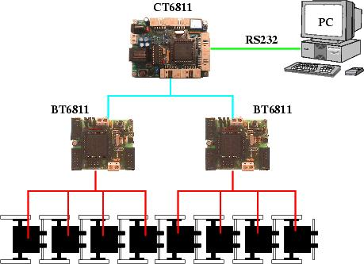
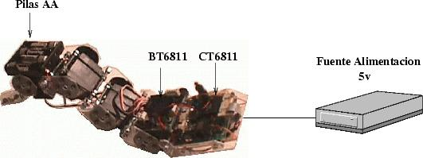

| CUBE 2.0: ELECTRÓNICA |
La electrónica está constituida por una red de microcontroladores, a través del SPI. Aunque CUBE 2.0 solo tiene 4 servos, la electrónica es expandible y permite controlar muchos más.
En la siguiente figura se muestra la electrónica necesaria para controlar un gusano de 8 servos:

Las BT6811 son los nodos esclavos de la red y se encargan de posicionar los servos, según los comandos recibidos del nodo maestro.
El nodo maestro es la CT6811, que además está conectado a un PC a través del puerto serie, del que recibe los comandos de posicionamiento. Este nodo realmente hace de "pasarela" entre el PC y las tarjetas BT6811. Es posible almacenar en la CT6811 una secuencia de movimiento para que el gusano sea autónomo del PC.
Se utilizan alimentaciones separadas para la electrónica y los servos. Con 4 pilas AA se alimenta la electrónica (Tarjetas BT6811 y CT6811) y con una fuente de alimentación externa los servos
